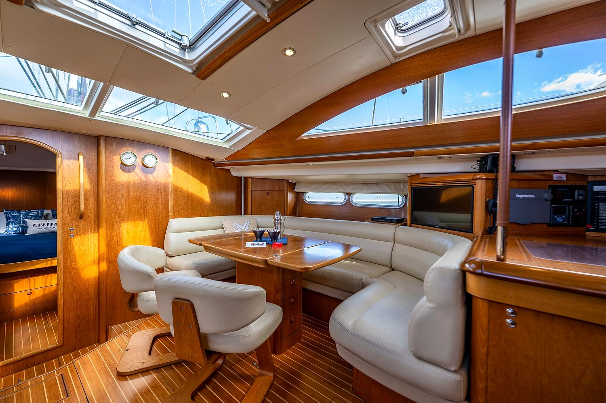
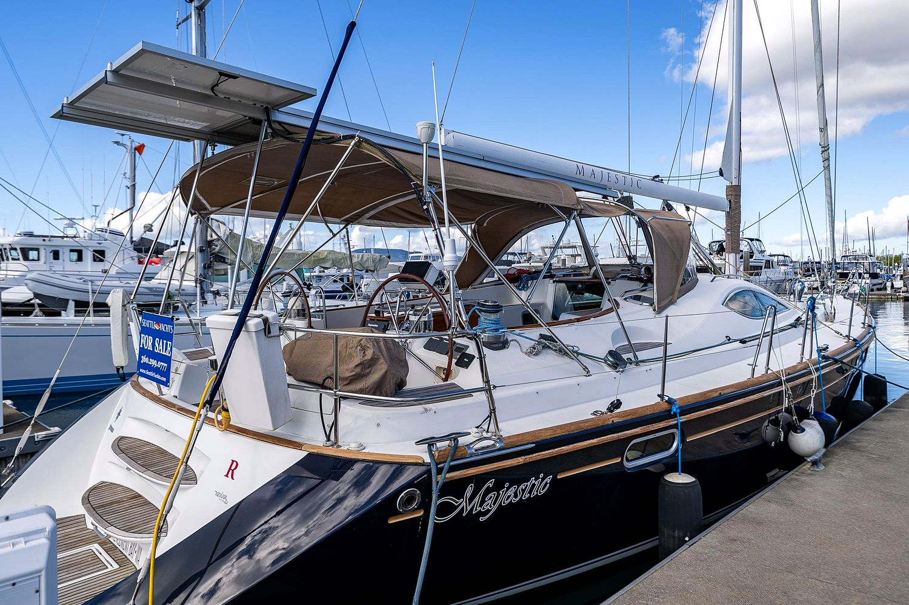
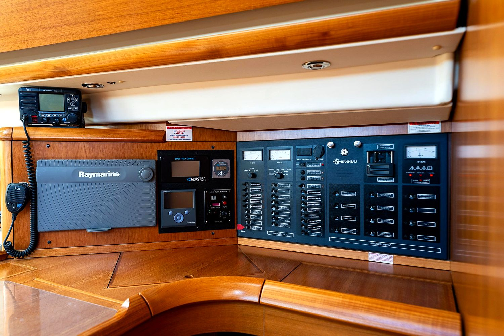
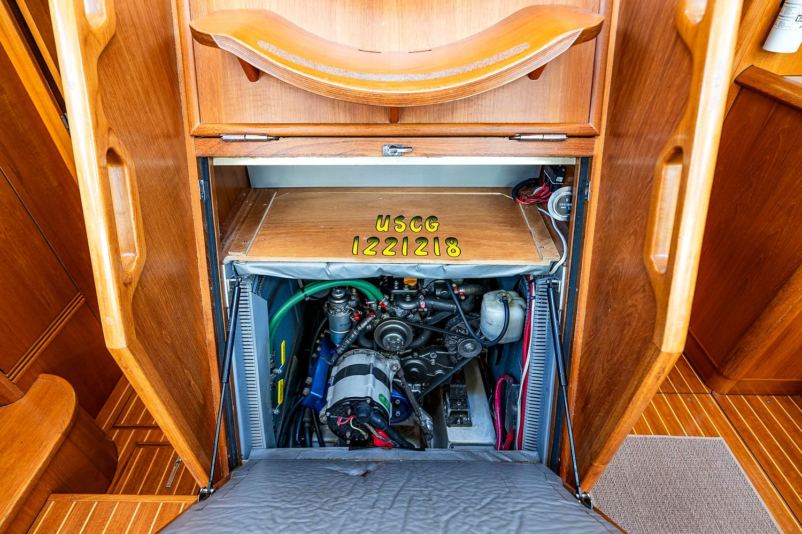
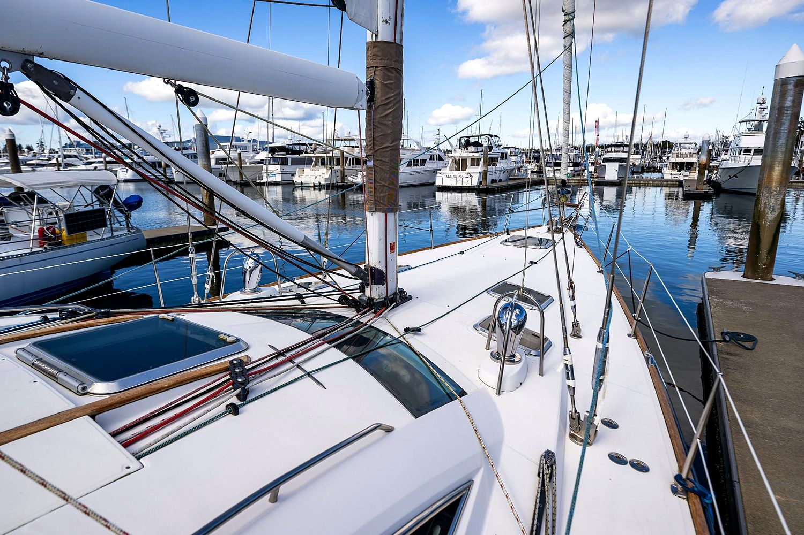
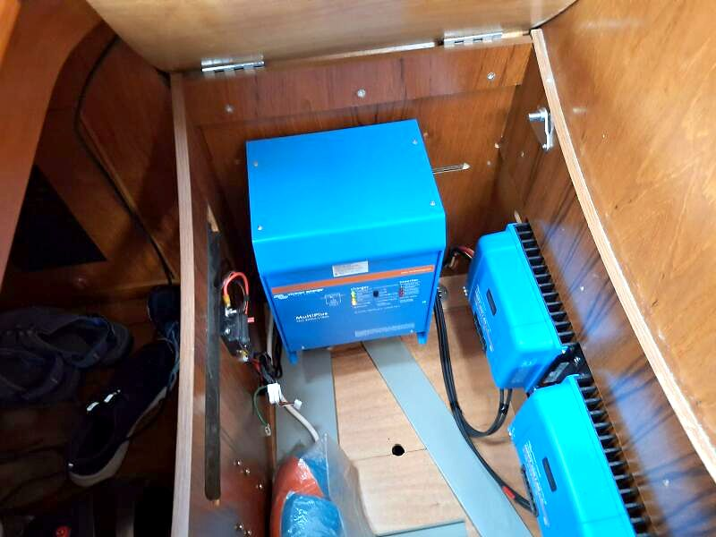

147
Displacement / length
On the class weight, in the light band. At the listing’s 39,584 lb the same waterline gives about 155. That is still light, and well under Paragon’s 188.
 Majestic
Majestic
2009 Jeanneau 54 DS · Anacortes · Still for sale
The original benchmark. Every system on the brief is already aboard. The layout is the reason she is a Maybe.
Planning all-in loads with the page.
The boat · still for sale
Majestic is a 2009 Jeanneau 54 DS, offered in Anacortes by Seattle Yachts. Jacques Fauroux drew the hull and Vittorio Garroni drew the cat-eye house. Jeanneau built her at Les Herbiers. The hull is solid glass below the waterline and cored above, with a balsa-cored deck and Kevlar in the high-load areas. She has a Flag Blue Awlgrip hull with a gold stripe.
She is still for sale. On 19 October 2026 the Seattle Yachts page and the YachtWorld listing both ask $349,500.
She was the first benchmark in this search. A 2018 refit put a new KKMI rig, a Spectra watermaker, 2018 Raymarine electronics with a second autopilot, and the full cockpit enclosure aboard. She also carries 1,125 W of solar on the bimini and Victron charging. The listing gives no year for those. She came off the main shortlist for one reason, the layout. A Jeanneau DS is a raised saloon. It is not the true deck saloon the brief now puts first. The layout section explains the difference.
She sleeps six in three cabins with three heads. The master is forward with a separate shower stall. Two aft cabins have queen berths, and each has its own head.
The honest part
The 54 DS raises the saloon over the hull and wraps it in Garroni’s cat-eye windows. Sitting at the dinette, you can see out, which is the reason the model sold. The saloon is still not on the cockpit level. You step down from the cockpit through a companionway, and the galley sits lower again along the side. Photographs 18, 19, and 23 show the levels.
The brief now ranks a true deck saloon first, with the cockpit, saloon, and galley on one level behind glass doors. Silver Pearl is the site’s example of that layout. The Wauquiez PS47 studies set the bar for the walk-through. Measured that way, Majestic is a very well-equipped raised-saloon production cruiser. She is not that layout, and no refit changes it. This is why she is a Maybe and not on the home page.
The windows also bring two costs. Bonded cat-eye glass is the first thing a 54 DS surveyor checks. In Mexico sun the saloon turns into a greenhouse unless it is shaded.
Class design · Sailboatdata Sun Odyssey 54 DS sheet
The ratios below come from the published class sheet: 37,479 lb on a 48.50 ft waterline, beam 15.92 ft, reported sail area 1,214 sq ft, overall 54.92 ft. The sheet’s draft line is the 6.50 ft shoal keel, and its notes give the deep keel at 7.5 ft. Majestic has the deep keel. Her listing gives a heavier 39,584 lb with the same 11,023 lb of ballast. Use the class ratios to understand the hull and the listing numbers to understand this boat.
On the class weight, in the light band. At the listing’s 39,584 lb the same waterline gives about 155. That is still light, and well under Paragon’s 188.
1,214 sq ft on the class weight, which is moderate. The heavier listing weight pulls it toward about 16.8. In-mast furling sets less than the triangle.
11,023 lb of iron on the class weight. On the listing’s heavier figure it is about 27.8%.
Under the common 2.0 screen. That is a screen, not a stability booklet.
Just under Brewer’s moderate band of 30 to 45. A long waterline for moderate weight. Paragon is 30.4.
1.34 × √LWL on 48.5 ft. The longest waterline of the cruising studies after Sara Lynn.
44 photographs · the YachtWorld / Seattle Yachts listing set, enhanced for lighting, exposure, color, and detail






Photographs 1, 2, and 4–42 are the full-size originals behind the YachtWorld listing, in listing order. Photograph 3 is a small image from the Seattle Yachts set, because the mirrors carry only a thumbnail of that frame. Photographs 43 and 44 are small images that appear only in the Seattle Yachts set. Each one is corrected for exposure, color, and detail. The full-resolution files are in the project Drive.
Against the brief · two of four required
Eberspächer 16 kW hydronic, plus a 40,000 BTU heat exchanger on the engine loop. This is the right system for a Salish Sea winter. Ask for the service record.
Spectra Newport 400, 2018. Ask about the membrane age and whether it has been pickled.
Three Trina 375 W panels over the bimini on two Victron SmartSolar MPPT 150/60, which shows in photograph 6. One highlights line says 1,175 W. Three 375 W panels make 1,125 W.
Haine rigging, all new at KKMI in 2018, eight years old in October 2026. Ask for the invoice, the wire spec, and whether the chainplates were pulled. 2029 is when a re-rig comes up, not now.
Side by side
| This boat, as listed | |
|---|---|
| Name | Majestic |
| Year, builder, model | 2009 Jeanneau 54 DS |
| Status | Active. Seattle Yachts and YachtWorld both asking $349,500 on 19 Oct 2026 |
| Where she is | Anacortes, Washington. Seattle Yachts |
| LOA / LOD / LWL | 54 ft 11 in / 53.25 ft / 48.5 ft |
| Beam / draft | 15 ft 11 in / 7 ft 6 in deep fin |
| Displacement / ballast | 39,584 lb / 11,023 lb |
| Engine | Yanmar 4JH4-HTE, 110 hp, 2008. 1,735 hours |
| Fuel / water / holding | 208 / 246 / 20 gal |
| Cabins / heads | 3 / 3. Master forward with a separate shower, two aft queens with their own heads |
| Hull | Flag Blue Awlgrip, gold stripe |
| Sun Odyssey 54 DS class | Sailboatdata |
|---|---|
| Designer, first built | Fauroux & Garroni. 2004, Jeanneau, France |
| LOA / LWL | 54.92 ft / 48.50 ft |
| Beam | 15.92 ft |
| Draft | 6.50 ft on the sheet. The deep keel is noted at 7.5 ft |
| Displacement | 37,479 lb |
| Ballast | 11,023 lb, fin with bulb, spade rudder |
| Fuel / water, class | 191 gal / 246 gal. This hull lists 208 gal of fuel |
| Sail area | 1,214 sq ft. I 66.08, J 19.35, P 59.92, E 19.19 |
| Mast height from DWL | 73.82 ft |
| Engine, class | Yanmar 4JH4-HTE, printed at 100 hp. This hull lists 110 |
| D/L, SA/D, comfort, CSF | 146.66 / 17.42 / 28.82 / 1.91 |
One ask, several mirrors
On 19 October 2026 the Seattle Yachts page (stock 2848172) and the YachtWorld and BoatTrader listing (10100003) were both live at $349,500. The listing photographs are dated March 2026. The Denison copy says it was last updated on 28 July 2026. The same listing is also carried by WS Yacht Brokers, United Yacht Sales Harborview, TopBoats, Bluewater, and Legacy Marine. Some mirror snippets still print an older $399,000 ask, so the price has been cut from $399,000. The date of that cut is not on any public page we found. Listingsport blocked automated access and was not checked.
Matt’s September 2026 file gives the market around her. Rum Runner, a 2007 54 DS in Seattle, at $298,500. Liberté, a 2007 54 DS in Brunswick, Georgia, at $315,000. European 54 DSs at roughly €190,000 to €295,000. Majestic is the expensive US 54 DS because her 2018 work is documented and she is already in Puget Sound.
TRU all-in method · editable
The lines below are planning estimates built for this page from the listing and Matt’s September 2026 file on this hull. Price, purchase costs, refit low and high, and a pile of gold. Labor is priced as hired. Insurance is $7,000, about 2% of the ask. Tax defaults to zero, which is only true if an Oregon buyer takes her out of Washington inside 45 days and does not keep her there as a liveaboard. Miss that clock and Washington use tax is about 8.9%. The switch below adds it. The only price on the page is the ask. This is planning arithmetic, not tax advice, and not an offer.
The $400,000 cash figure is the planning cap. It is an input. Change it. The loan line is blank on purpose.
Purchase costs are for a boat already in Anacortes: a surveyor for a 55 ft boat, an oil sample, a survey haul, a rig look at the 2018 wire, a sail and diesel look, and local travel. Delivery is a short local move, not an ocean leg. All of these are estimates, not quotes.
The cards hold the ask. This screen holds one price and lets the reserve run from low to high, which is how a TRU file totals. At the ask, with tax at zero, it reads $407,050 to $539,050, and the midpoint is $473,050. The low refit column comes to $39,900, inside Matt’s $25,000–50,000 Year-1 range for an honest Mexico boat. Type a different number into Negotiated to test one. Nothing typed here is saved or published.
The download is a version 2.1 file. Categories match the calculator: Anchor, Dinghy, Elec, Energy, Hull, Mech, Nav, Prop, Rigging, Safety, Sails, Other. There is no saved Majestic .tru file in the project Drive.
On the Anacortes dock
Seattle Yachts · Anacortes
The listing broker on the current Seattle Yachts page, at the Anacortes office. The boat is centrally listed and also carried by Denison, WS Yacht Brokers, and others.
Seattle Yachts stock 2848172 · Denison listing · Sailboatdata class sheet